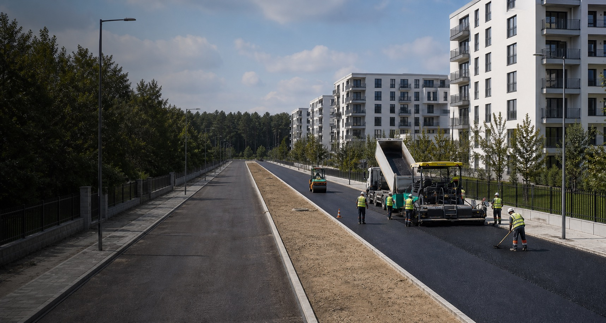

Drumuri publice și private
Construcție, reabilitare și reparații pentru drumuri, căi de acces și zone carosabile. Lucrăm pe proiecte publice și private, cu atenție la pregătirea terenului, organizarea etapelor și integrarea lucrărilor conexe.
- Lucrări pentru trafic public și privat
- Pregătire teren și straturi suport
- Execuție coordonată cu lucrări conexe
